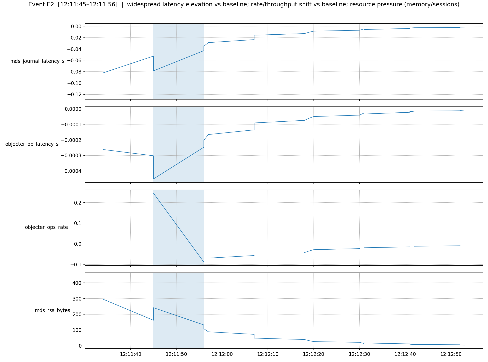
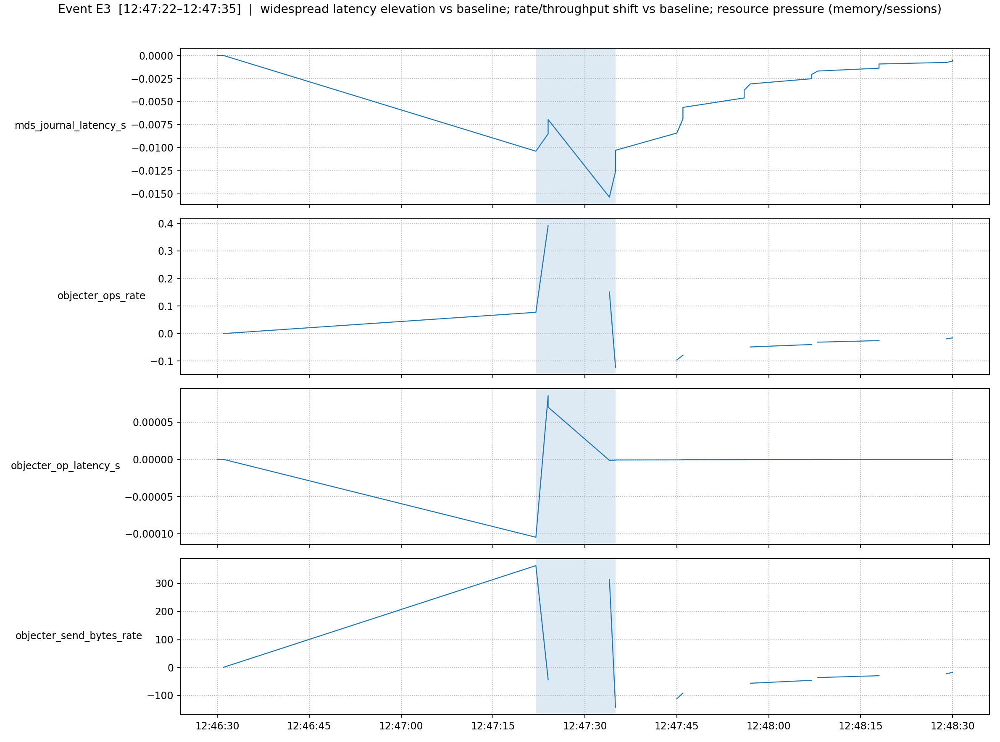

event_E2_context.png

event_E3_context.png

event_E4_context.png
Generated by mds_anomaly_poc.py
{
"ewma_span": 10,
"z_threshold": 3.0,
"min_metrics_for_event": 2,
"max_gap_sec": 30.0,
"page_size": 10,
"baseline_files": [
"mds_metrics_base.csv"
],
"stress_files": [
"mds_metrics_stress.csv",
"mds_metrics_stress_1.csv",
"mds_metrics_base_1.csv"
],
"iforest_weight": 0.4,
"hybrid_thresh": 0.6,
"warmup_sec_per_phase": 10.0,
"min_duration_sec": 8.0,
"min_severity": 0.45
}
| Event | Start | End | Duration | Phase mix | #metrics≥z | max|z| | Severity | Label | Reasoning | Top metrics |
|---|---|---|---|---|---|---|---|---|---|---|
| E2 | 2025-11-04 12:11:45+00:00 | 2025-11-04 12:11:56+00:00 | 11.0s | stress:2 | 2 | 52.6 | 0.54 | moderate | widespread latency elevation vs baseline; rate/throughput shift vs baseline; resource pressure (memory/sessions) | mds_journal_latency_s_resid(down,52.6), objecter_op_latency_s_resid(down,14.8), objecter_ops_rate_resid(up,10.1), mds_rss_bytes_resid(up,6.2), objecter_send_bytes_rate_resid(up,2.3), mds_heap_bytes_resid(up,0.1) |
| E3 | 2025-11-04 12:47:22+00:00 | 2025-11-04 12:47:35+00:00 | 13.0s | stress:2 | 2 | 8.2 | 0.47 | moderate | widespread latency elevation vs baseline; rate/throughput shift vs baseline; resource pressure (memory/sessions) | mds_journal_latency_s_resid(down,8.2), objecter_ops_rate_resid(down,5.0), objecter_op_latency_s_resid(down,3.5), objecter_send_bytes_rate_resid(up,3.4), mds_rss_bytes_resid(up,0.2), mds_heap_bytes_resid(down,0.2) |
| E4 | 2025-11-04 13:23:47+00:00 | 2025-11-04 13:24:08+00:00 | 21.0s | stress:4 | 4 | 25.9 | 0.60 | moderate | widespread latency elevation vs baseline; rate/throughput shift vs baseline; resource pressure (memory/sessions) | objecter_op_latency_s_resid(up,25.9), objecter_ops_rate_resid(up,13.8), mds_journal_latency_s_resid(down,7.1), objecter_send_bytes_rate_resid(up,2.5), mds_rss_bytes_resid(down,0.3), mds_heap_bytes_resid(down,0.2) |
Tip: open images in a new tab for full-size view.